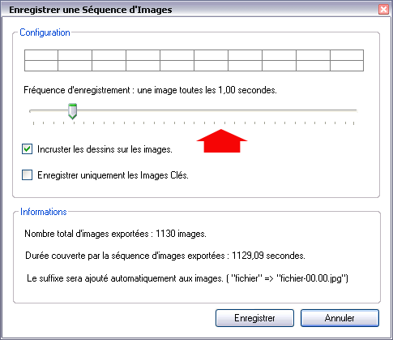
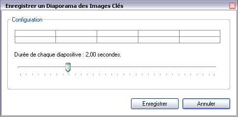

Enregistrer des Images Fixes
Cet article vous guide dans les opérations suivantes :
Enregistrer l'image en cours, Enregistrer une Séquences d'Images,
Enregistrer un Diaporama des Images Clés, Enregistrer les Images Clés dans un document PDF.
1. Enregistrer l'image en cours
Faites défiler la vidéo jusqu'à trouver la position à enregistrer.
Cliquez sur le bouton :  , pour lancer la boîte de dialogue d'enregistrement.
, pour lancer la boîte de dialogue d'enregistrement.
2. Enregistrer une Séquences d'Images
Une séquence d'image est un ensemble d'images tirées de la vidéo à intervalle régulier.
Utilisez le bouton :  , pour lancer la boîte de dialogue d'enregistrement d'une Séquence d'Images.
, pour lancer la boîte de dialogue d'enregistrement d'une Séquence d'Images.
A l'aide du contrôleur de fréquence (flèche), choisissez l'intervalle à respecter entre deux images exportées.

Cliquez sur le bouton enregistrer pour choisir le nom du fichier.
Les images sont automatiquement nommées en fonction de leur position
dans la vidéo, par un suffixe qui est accolé au nom de fichier.
Le
suffixe et l'extension seront automatiquement ajoutés lors de
l'enregistrement. Par exemple, pour enregistrer une série d'images aux
noms suivants :
image-001.jpg, image-002.jpg, image-003.jpg, etc.
Il vous suffit d'indiquer "image" dans la boîte de dialogue d'enregistrement.
Le format du suffixe dépend néanmoins des préférences générales.
Les
formats possibles sont : Classique (heure, minutes, secondes,
centièmes), Numéros des images, Dix millièmes d'heures, et Centièmes de
minutes.
(Voir également : Préférences Générales.)
Vous pouvez également exporter uniquement les Images Clés à l'aide de la case à cocher "Enregistrer uniquement les images clés".
Dans ce cas toutes les images clés seront exportées, sans tenir compte de la fréquence indiquée.
3. Enregistrer un Diaporama des Images Clés
Un
diaporama des Images Clés est une petite animation vidéo dans laquelle
les Images Clés sont successivement visibles pendant une durée
déterminée.
Utilisez le bouton :  , pour lancer la boîte de dialogue d'enregistrement d'un Diaporama.
, pour lancer la boîte de dialogue d'enregistrement d'un Diaporama.

A
l'aide du contrôleur de durée, indiquez le temps durant lequel
chaque Image Clé va rester visible avant de passer à la suivante.
Les dessins que vous auriez pu ajouter sur les Images Clés seront incrustés sur les images de la vidéo.
Pour en savoir plus sur les Images Clés, consultez l'article Manipuler les Images Clés.
4. Enregistrer les Images Clés dans un document PDF
Exportez les images clés dans un document PDF, pour en faciliter l'impression ou le partage.
Utilisez le bouton :  , pour lancer la boîte de dialogue d'enregistrement.
, pour lancer la boîte de dialogue d'enregistrement.
La mise en page du document est gérée par Kinovea:
- Chaque Image Clé est centrée sur sa propre page,
- Le titre et les commentaires sont ajoutés sous l'image.
Pour ajouter un titre et des commentaires à une image clé, utilisez le bouton :  , de la barre d'outils des Images Clés.
, de la barre d'outils des Images Clés.
(Voir également Manipuler des Images Clés.)